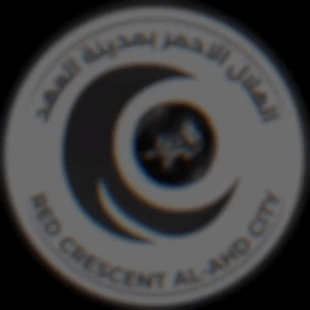

مرحباً بكم في موقع الهلال الأحمر بمدينة العهد
القيادة
القيادة العليا
سليمان العنزي
قائد الهلال الأحمر
E-001
محمد العنزي
نائب قائد
E-002
المساعدين
سيف الغامري
مساعد قائد
E-003
مساعد قائد
E-004
نواب المساعدين
E-005
فادي سلامة
E-006
عزيز رائد
E-007
E-008
E-009
المستشارين
E-O1O
E-011
E-012
مواقع الهلال الاحمر [العهد]
أسطول المركبات [العهد]

بوكس الهلال
متدرب

فورد
>مستوى 1

اف جي
مستوى 2

كامري
مستوى 3

درانجو
مستوى 4

تورس 2025
مستوى 4

دوج تشارجر
مستوى 5

لاند كروزر
مستوى 6

اكسبدشن
مستوى 6

بي ام
مستوى 7

لكززس ارنوبه
مستوى 7

يوكن
مستوى 8

رنج روفر
قياده
تاهو 2026
قياده

عياده متنقله
قياده

موستنق
قياده

باترول
قياده

تاهو عبيه
مستوى 8
لاند كروز
مستوى 6
مستندات الهلال الأحمر [العهد]
أمور يجب فهمها
أولاً: بمجرد قبولك في الهلال الأحمر تصبح موظفاً حكومياً ولا يمكنك تغيير وظيفتك أو الذهاب لشراء مركبة أو استعمال مركبتك الشخصية والتجول في المدينة أو الإجرام بشكل عام إلا بطلب إجازة، وسيتم شرح آلية الإجازات في هذه الدورة.
ثانياً: يجب عليك الالتزام ببروتوكولات الراديو وتسجيل الدخول والانضمام، وخلاف ذلك سيتم فصلك وتغريمك.
ثالثاً: سيتم شرح كل ما تحتاجه في قطاع الهلال الأحمر في هذا الدليل، بعد ذلك سيكون هنالك اختبار نظري للتأكد من فهمك للدليل.
رابعاً: بعد قبولك بشكل رسمي يجب عليك فهم أنك لا تمثل نفسك، بل تمثل قطاع الهلال الأحمر كاملاً بمن فيهم القيادات وزملائك، لذلك نرجو منك الالتزام، وفي حال ليس لديك رغبة بالالتزام يجب عليك مغادرة التوظيف حالاً.
تردد الموجات
عموم وحدات لوس سانتوس: تتواجد داخل موجة 13.
عموم وحدات ساندي وبوليتو: تتواجد داخل موجة 14.
الموجة 4: الأمن العام (عمليات لوس سانتوس)
الموجة 5: الأمن العام (عمليات ساندي وبوليتو)
الموجة 6: الأمن العام (شعبة المرور)
الموجة 7: أمن الطرق
الموجة 8، 9، 21: أمن المنشآت
الموجة 12: الرقابة والتفتيش (في حالة مشاهدة هاك فقط)
الموجة 13: الهلال الأحمر (وحدات لوس سانتوس)
الموجة 14: الهلال الأحمر (وحدات ساندي وبوليتو)
الموجة 15، 16، 25، 26: حرس الحدود
الموجة 17: الميكانيك
الموجة 18: الميكانيك
آلية المباشرة في الميدان
1️⃣ يجب عليك تسجيل الدخول في دفتر الحضور.
2️⃣ يجب عليك التوجه إلى روم العمليات لطلب التوجيه والمباشرة بالميدان.
3️⃣ تسجيل الدخول في المستشفى.
4️⃣ تغيير المسمى الميداني حسب التوجيه ويكون كالتالي: التوجيه | الكود الوظيفي (مثال: لام 4 | E-413).
5️⃣ في حال كتابة كود 7 يكون المسمى الميداني: كود 7 | لام 4 | E-413.
6️⃣ التوجه لأقرب مستشفى وإخراج المركبة من الكراج المخصص.
7️⃣ الدخول للموجة.
8️⃣ التوجه للموقع المحدد لك من العمليات والتوقف عند نقطة ثابتة.
أكواد الحالات
كود 1: يذكر عند تمام جاهزيتك للمباشرة بالميدان بعد التأكد من الطعام والشراب، توفر العدد الإسعافية وتصليح المركبة ووصولك لموقع توجيهك.
كود 3: يذكر للعمليات عند مباشرة موقع يتواجد فيه 3 مسقطين أو أكثر (مسعفين، عساكر، ميكانيك، مواطنين) مع ذكر الموقع.
كود 4: يذكر عند حاجتك لطلب إذن بالعبور من نداء إستغاثة والموقع آمن.
كود 6: يذكر عند حاجتك للتزود بعدة الإسعافات الأولية، أو لاستلام الترقية أو المركبة الجديدة.
كود 7: يذكر عند حاجتك للغفوة أو الابتعاد عن الجهاز لمدة لا تزيد عن 15 دقيقة.
كود 8: يذكر عند مشاهدة مسقط يحمل سلاحاً (مسدس، سكين، شوزن) ليمنحك العمليات الإذن بالذهاب لموجة الأمن العام.
الحالة 70: تذكر عند وقوع خلل تقني عام أو خاص (إنترنت أو كراش).
كود 2: يستخدم عند وجود مسقط في منطقة نائية في حدود وحدات البحث والإنقاذ ولم يكتمل العدد المسموح لتفعيل الدورة.
تعليمات هامة
• عدم إنعاش المصابين في منتصف الشارع، يجب حملهم إلى أقرب رصيف.
• عدم تمرير الاستفسارات العامة من خلال الموجة (التوجه لروم العمليات).
• يجب الإطلاع على التحديثات الهامة للهلال الأحمر قبل الدخول والمباشرة.
• في حال مباشرتك للحالات المسقطة على أطراف نداء الاستغاثة بدون توجيه، يعتبر مخالفة.
• يمنع منعاً باتاً وضع أي نوع من التفاعل (الريأكشن) على جميع تحديثات القطاع.
• لا يحق لأي قطاع آخر أن يأمرك بدخول نداء الاستغاثة.
• تسجيل دخولك دون تشغيل التصوير يحملك كامل المسؤولية.
• يمنع قيادة مركبتك الخاصة تحت أي ظرف دون طلب إجازة.
• أولوية الإنعاش للمسقطين: مسعف - عسكري - ميكانيكي - مواطن.
• ممنوع المباشرة في موقع إطلاق النار ومغادرة الموقع فوراً.
• يمنع منشن @الهلال الأحمر أو @here أو @everyone.
نظام الاستقالات
لا يسمح لحاملي رتبة متدرب أو مستوى 1 بطلبها
في حال الإصرار على الاستقالة وأنت تحمل رتبة متدرب يترتب عليها:
غرامة بقيمة $1,000,000 و منع التوظيف لمدة 14 يوم للوظائف المعتمدة
وفي حال الإصرار على الاستقالة وأنت تحمل رتبة مستوى 1 يترتب عليها :
غرامة بقيمة $500,000 و منع التوظيف لمدة 7 يوم للوظائف المعتمدة
المخالفات الشائعة
• القيادة الغير واقعية مثل ( السرعة - تفحيط - عكس سير - طلوع اوف رود - الخ ) .
• مقاطعة البلاغات عدم ترك 5 ثوان بين بلاغ وآخر.
• تشويه سمعة القطاع بأي شكل من الأشكال.
• عدم كتابة أو تحديث المسمى في الـ FiveM.
• مباشرة في موقع غير الموجه لك.
• التواجد في روم العمليات أكثر من 3 دقائق.
• عدم الحضور للإستدعاء.
• دخول نداء استغاثة أو استنفار أمني بدون إذن.
• مباشرة في موقع غير امن.
• الأفك او كود 7 ( أكثر من 10 دقائق ).
• إهمال المركبة.
• مباشرة بدون توجيه.
• إركاب مواطن في مركبة الإسعاف .
• التهرب الوظيفي.
• تدبيل الإنعاش.
• الأسلوب الغير اللائق.
• الخروج وحدة مشتركة.
• المباشرة في البحار والجبال.
آلية التواجد والترشيح
آلية احتساب ايام التواجد:
• يجب ان يكون بين تسجيل الدخول والخروج في اليوم الواحد ساعة على الأقل.
• يجب تسجيل الدخول والخروج في دفتر الحضور ساعة كاملة على الاقل.
• في حال نسيان تسجيل الدخول او الخروج لن يتم احتساب اليوم.
تنويه: في حال عدم تسجيل الدخول او الخروج 3 ايام متتالية في دفتر الحضور يترتب على ذلك مخالفة الفصل من القطاع.
آلية اعلان ترشيح الترقيات:
• يتم استقبال طلبات الترشيح حسب اعلان الترشيح في روم ( إعلانات الدورات ) في يوم الثلاثاء.
• ويتم الإعلان عن الأسماء في يوم الخميس.
ضوابط الترشيح:
• في حال حضور مرشح غير مستوفي للشروط تصدر له ( غرامة وإنذار ).
• يمكنك فتح تكت ( تظلم من ترقية ) في حال عدم قدرتك على الحضور خلال فترة الدورة لأسباب طارئة بشرط اتمامك كافة الشروط.
• تحذير: في حال فتح تكت تظلم من ترقية دون اكماللك لكافة الشروط سيحرر لك مخالفة فورية.
• تنويه: يجب على جميع الراغبين بحضور الترشيح والترقية حضور دورة العمليات المقامة كل يوم جمعة.
نظام الإجازات
إجازات داخلية: لا يسمح لحاملي رتبة متدرب بطلبها
إجازات داخلية: لحاملي رتبة مستوى 1 فأعلى. يجب سداد المخالفات قبل الطلب.
إجازات داخلية: يتقدم المسعف بطلبها في حالة رغبته بالتواجد كمواطن لفترة محدودة وآلية معينة .
إجازات خارجية: للغياب من 3 إلى 21 يوماً متواصلة خارج المقاطعة.
يمكن لحاملي رتبة مستوى 1 فأعلى طلبها .
يجب سداد المخالفات إن وجدت أثناء طلبك للإجازة .
لا يمكنك طلب إجازة مرتين في نفس اليوم أو تمديد الإجازة
{ بين كل إجازة 24 ساعة } .
يمكن طلبها في الأيام التالية { الأحد - الثلاثاء - الجمعة } بشروط وهي :
توفر 20 وحده في الميدان { دون احتساب المشرفين و القيادة } .
يمكن طلبها في الأيام التالية { السبت - الاثنين - الأربعاء - الخميس } بشروط وهي :
اتمام 3 ساعات عمل متتالية في نفس اليوم + توفر 20 وحده في الميدان { دون احتساب المشرفين و القيادة } .
| المستوى | يتجدد الرصيد كل يوم أحد الساعة 12 ص |
|---|---|
| مستوى 1 | 14 ساعة |
| مستوى 2 | 16 ساعة |
| مستوى 3 | 18 ساعة |
| مستوى 4 | 20 ساعة |
| مستوى 5 | 22 ساعة |
| مستوى 6 | 24 ساعة |
| مستوى 7 | 26 ساعة |
| مستوى 8 | 28 ساعة |
| مستوى 9 | 30 ساعة |
| مستوى 10 | 35 ساعة |
نظام الترقيات
| الرتبة | متطلبات الترقية حسب رتبتك | زمن الترقية |
|---|---|---|
| من متدرب الى مستوى 1 | 7 ايام من تعيينك + 5 ايام تواجد + اجتياز دورة العمليات | 7 ايام من تاريخ تعينك |
| من مستوى 1 الى مستوى 2 | 10 يوم تواجد + المشاركة في 15 تقرير عمليات (اجتياز اختبار الترشيح للمستوى) | 14 ايام من تاريخ اخر ترقية |
| من مستوى 2 الى مستوى 3 | 15 يوم تواجد + المشاركة في 25 تقرير عمليات (اجتياز اختبار الترشيح للمستوى) | 21 ايام من تاريخ اخر ترقية |
| من مستوى 3 الى مستوى 4 | 20 يوم تواجد + المشاركة في 30 تقرير عمليات (اجتياز اختبار الترشيح للمستوى) | 28 ايام من تاريخ اخر ترقية |
| مستوى 4 | ترشيح (الإشراف الميداني) عمر 18 فما فوق + (اجتياز اختبار الاشراف الميداني) | |
| من مستوى 4 الى مستوى 5 | 150 ساعة مباشره | 40 يوم من تاريخ اخر ترقية |
| من مستوى 5 الى مستوى 6 | 170 ساعة مباشره | 45 يوم من تاريخ اخر ترقية |
| من مستوى 6 الى مستوى 7 | 200 ساعة مباشره | 50 يوم من تاريخ اخر ترقية |
| من مستوى 7 الى مستوى 8 | ترشيح القيادة ( الإشراف العام ) | |
| من مستوى 8 الى مستوى 9 | ترشيح القيادة | |
| من مستوى 9 الى مستوى 10 | ترشيح القيادة |
ملاحظة : الشروط وزمن الترقية قابلة للتعديل.
نظام ترقيات المعتمدين
| الترقية | متطلباتها |
|---|---|
| من متدرب الى مستوى 1 | (دورة العمليات + اجتياز اختبار الترشيح للمستوى)3 ايام تواجد |
| من مستوى 1 الى مستوى 2 | (اجتياز اختبار الترشيح للمستوى)7 ايام تواجد |
| من مستوى 2 الى مستوى 3 | (اجتياز اختبار الترشيح للمستوى)12 ايام تواجد |
| من مستوى 3 الى مستوى 4 | (اجتياز اختبار الترشيح للمستوى)14 ايام تواجد |
| مستوى الاشراف الميداني4 | (اجتياز اختبار الاشراف الميداني) 18يوم تواجد من اخر ترقية |
| من مستوى 4 الى مستوى 5 | 21 يوم تواجد + التواجد في 30 تقرير |
| من مستوى 5 الى مستوى 6 | 25 يوم تواجد + التواجد في 35 تقرير |
| من مستوى 6 الى مستوى 7 | 28 يوم تواجد + التواجد في 40 تقرير |
| من مستوى 7 الى مستوى 8 | ( الإشراف العام )28 يوم تواجد + 40 تقرير اشراف |
| من مستوى 8 الى مستوى 9 | ترشيح من القيادة |
| من مستوى 9 الى مستوى 10 | ترشيح من القيادة |
ملاحظة : الشروط وزمن الترقية قابلة للتعديل.
( الإشراف العام )ملاحظة : لن يتم ترقيتك في حال لم يتم ترشيحك من قبل القيادة
تم اعفاء جميع المعتمدين من التقارير للعمليات و نائب العمليات من متطلبات الترقية لكن لا يحق لأي شخص يحمل دوره العمليات رفض الاستلام متى ما استدعت الحاجة لذلك
ملاحظة : لن يتم ترقيتك في حال كان عليك تأخير ترقية أو نقص في عدد ايام التواجد
الخرائط

لائحة المخالفات والجزاءات التفصيلية
مخالفات الفصل
| نوع المخالفة | الجزاء المقرر |
|---|---|
| استقالة فترة تدريب | فصل + غرامة بقيمة 1,000,000 + منع من التوظيف 14 يوم |
| صدم المتعمد لغرض الانعاش | فصل + غرامة بقيمة 1,000,000 + منع من التوظيف 14 يوم + نهائي من الهلال الاحمر |
| عدم احترام القيادة / المشرفين (يطبق على المشرفين) | فصل + غرامة بقيمة 1,000,000 + منع من التوظيف 14 يوم |
| استقالة قبل الرجوع من الاجازة الداخلية | فصل + غرامة بقيمة 1,000,000 + منع من التوظيف 14 يوم |
| تهرب وظيفي | فصل + غرامة بقيمة 1,000,000 + منع من التوظيف 14 يوم |
| تخريب سيناريو | فصل + غرامة بقيمة 1,000,000 + منع من التوظيف 14 يوم + نهائي من الهلال الاحمر |
| اعتراض على قرار قيادة | فصل + غرامة بقيمة 1,000,000 + منع من التوظيف 14 يوم |
| سب وقذف | فصل + غرامة بقيمة 1,000,000 + منع من التوظيف 14 يوم + نهائي من الهلال الاحمر + باند نهائي |
| اللعن بأي شكل من الأشكال | فصل + غرامة بقيمة 1,000,000 + منع من التوظيف 14 يوم + نهائي من الهلال الاحمر + باند 14 يوم |
| تدبيل انعاش | فصل + غرامة بقيمة 1,000,000 + منع من التوظيف 14 يوم + نهائي من الهلال الاحمر + باند نهائي وتصفير |
| تخريب بوظيفة الهلال الاحمر | فصل + غرامة بقيمة 1,000,000 + منع من التوظيف 14 يوم + نهائي من الهلال الاحمر + باند 14 يوم |
| الاجرام بوظيفة الهلال الاحمر | فصل + غرامة بقيمة 1,000,000 + منع من التوظيف 14 يوم + نهائي من الهلال الاحمر + باند 14 يوم |
| استخدام الرتبة للمصلحة الشخصية (يطبق على المشرفين) | فصل + غرامة بقيمة 1,000,000 + منع من التوظيف 14 يوم + نهائي من الهلال الاحمر |
| عدم العودة للوظيفة بعد انتهاء اجازة خارجية (خاص بمسؤول الترقيات) | فصل + غرامة بقيمة 1,000,000 + منع من التوظيف 5 ايام |
| دخول غير شرعي | فصل + غرامة بقيمة 1,000,000 + منع من التوظيف 14 يوم + نهائي من الهلال الاحمر |
| تلفيت من الديسكورد | فصل + غرامة بقيمة 1,000,000 + منع من التوظيف 14 يوم + باند 3 ايام |
| عدم تواجد (خاص بمسؤول الترقيات) | فصل + غرامة بقيمة 1,000,000 + منع من التوظيف 14 يوم |
| عدم تواجد (المشرفين) | انذار نهائي بكسر رتبة + غرامة بقيمة 1,000,000 |
| كثرة المخالفات | فصل + غرامة بقيمة 1,000,000 + منع من التوظيف 14 يوم |
| رتبة عليا في مدينة اخرى | فصل + غرامة بقيمة 1,000,000 + منع من التوظيف 14 يوم |
| مخالفة قوانين المقاطعة | فصل + غرامة بقيمة 1,000,000 + منع من التوظيف 14 يوم |
مخالفات 750 الف
| نوع المخالفة | الجزاء المقرر |
|---|---|
| صدم مواطنين بشكل متعمد ومستمر | كسر رتبة + انذار نهائي بالفصل + غرامة مليون |
| تشويه سمعة الهلال الاحمر بأي شكل من الأشكال | انذار اول + تأخير ترقية + غرامة بقيمة 750 الف |
| الانتداب بدون اخذ الاذن (يطبق على المشرفين) | انذار اول + غرامة بقيمة 750 الف |
| حضور توظيف بدون اخذ الاذن من القيادة | انذار اول + غرامة بقيمة 750 الف |
| مضايقة الكادر النسائي بأي شكل من الأشكال | كسر رتبة + انذار اول + غرامة بقيمة 750 الف |
| الاستهبال بالميدان (يطبق على المشرفين) | كسر رتبة + انذار اول + غرامة بقيمة 750 الف |
| حمل ممنوعات واسلحة | انذار اول + تأخير ترقية + غرامة بقيمة 750 الف + سحب الممنوعات |
| المباشرة في المجرمين قبل العساكر | انذار اول + تأخير ترقية + غرامة بقيمة 750 الف |
| رفض استلام مهام طاقم العمليات | انذار اول + سحب رول العمليات + تأخير ترقية + غرامة بقيمة 750 الف |
مخالفات 500 الف
| نوع المخالفة | الجزاء المقرر |
|---|---|
| مباشرة في مركبة غير مخصصة لك | انذار اول + تأخير ترقية + غرامة بقيمة 500 الف |
| الاستقبال في روم العمليات | انذار اول + غرامة بقيمة 500 الف |
| الدخول لروم الكادر النسائي (يطبق على المشرفين) | انذار اول + غرامة بقيمة 500 الف |
| تظليل مركبة حكومية | انذار اول + غرامة بقيمة 500 الف |
| الدخول لموجة الرقابة | انذار اول + تأخير ترقية + غرامة بقيمة 500 الف |
| دخول برنامج الدولة لطلب الانعاش وقت الاجازة (يطبق على المشرفين) | انذار اول + تأخير ترقية + غرامة بقيمة 500 الف |
| المباشرة في المجرمين بدون اذن العساكر (داخل الميناء) | انذار اول + غرامة بقيمة 500 الف |
| عدم الإلتزام بقوانين الإجازة الداخلية (يطبق على المشرفين) | انذار اول + غرامة بقيمة 500 الف |
| التوجه لكراج التعديل والتزويد بدون اذن | انذار اول + تأخير ترقية + غرامة بقيمة 500 الف |
| التوجه لمعرض السيارات بدون اذن | انذار اول + تأخير ترقية + غرامة بقيمة 500 الف |
| المباشرة في موقع غير آمن | انذار اول + تأخير ترقية + غرامة بقيمة 500 الف |
| اهانة اي شخص بالمقاطعة | انذار اول + تأخير ترقية + غرامة بقيمة 500 الف |
| التلاعب في دفتر الحضور (يطبق على المشرفين) | انذار اول + تأخير ترقية + غرامة بقيمة 500 الف |
| التلاعب على مسؤولين الترقيات (يطبق على المشرفين) | انذار اول + تأخير ترقية + غرامة بقيمة 500 الف |
| التدخل في الشؤون الادارية | انذار اول + تأخير ترقية + غرامة بقيمة 500 الف |
| الرد بطريقة غير مناسبة بالموجة | انذار اول + تأخير ترقية + غرامة بقيمة 500 الف |
| كثرة الشكاوي عليه | انذار نهائي بالفصل + تأخير ترقية + غرامة بقيمة 500 الف |
| التأخر في العودة للوظيفة بعد انتهاء الاجازة الداخلية | انذار اول + تأخير ترقية + غرامة بقيمة 500 الف |
| سجن رقابي بوظيفة الهلال الاحمر (يطبق على المشرفين) | انذار اول + تأخير ترقية + غرامة بقيمة 500 الف |
| الافك او الغفوة اكثر من 15 دقيقة | انذار اول + تأخير ترقية + غرامة بقيمة 500 الف |
| الخروج مشتركة (يطبق على المشرفين) | انذار أول + كسر رتبة + غرامة بقيمة 500 الف |
| عدم طلب كود 3 (يطبق على المشرفين) | انذار اول + تأخير ترقية + غرامة بقيمة 500 الف |
| اسلوب غير لائق | انذار اول + تأخير ترقية + غرامة بقيمة 500 الف |
| التدخل في شؤون القطاعات الاخرى | انذار اول + تأخير ترقية + غرامة بقيمة 500 الف |
| دخول استنفار أمني أو المباشرة بدون اذن | انذار اول + تأخير ترقية + غرامة بقيمة 500 الف |
مخالفات 300 الف
| نوع المخالفة | الجزاء المقرر |
|---|---|
| التأخير بالوصول للمسقطين | انذار اول + غرامة بقيمة 300 الف |
| مخالفة قوانين التكت | انذار اول + غرامة بقيمة 300 الف |
| عدم اعطاء الكود الميداني | انذار اول + غرامة بقيمة 300 الف |
| عدم المباشرة بعد مرور 5 دقائق من طلب كود 8 | انذار اول + غرامة بقيمة 300 الف |
| عدم التزام ببروتوكولات الراديو | انذار اول + غرامة بقيمة 300 الف |
| اثارة الجدل في الشات العام | انذار اول + غرامة بقيمة 300 الف |
| ازعاج منسوبي الشؤون الإدارية | انذار اول + غرامة بقيمة 300 الف |
| رفض توجيه العمليات | انذار اول + غرامة بقيمة 300 الف |
| مباشرة بدون تسجيل دخول (دفتر الحضور او عند العمليات او بالمستشفى) | انذار اول + غرامة بقيمة 300 الف |
| مباشرة في موقع غير موجه لك | انذار اول + غرامة بقيمة 300 الف |
| المباشرة بدون الدخول للموجة | انذار اول + غرامة بقيمة 300 الف |
| عدم تسليم العمليات عند الخروج | انذار اول + غرامة بقيمة 300 الف |
| منشن الرقابة في رسائل الهلال الاحمر او التكتات | انذار اول + غرامة بقيمة 300 الف |
| اهمال الراديو | انذار اول + غرامة بقيمة 300 الف |
| عدم الإلتزام في قوانين الهلال الأحمر | انذار اول + غرامة بقيمة 300 الف |
| عدم طلب كود 8 | انذار اول + غرامة بقيمة 300 الف |
| الكتابة أثناء المنع او التنقيط | انذار اول + غرامة بقيمة 300 الف |
| الاعتراض على مخالفة صحيحة | انذار اول + غرامة دبل المخالفة الاساسية |